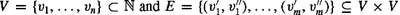

|
| |||||||||||||
|
|
||
The goal of complexity theory is to characterize the amount of resources needed for the computation of specific problems. Common resources include sequential time, sequential space, number of gates in Boolean circuits, parallel time in a multiprocessor machine, etc. The exact complexity of a problem is determined by the amount of resources that is both sufficient and necessary for its solution. Sufficiency implies an upper bound on the amount of resources needed to solve the problem for every instance of the input. Necessity implies a lower bound, i.e., for some instance of the input, at least a certain amount of resources is required to solve the problem.
The amount of resources that is needed to solve a problem allows for an elegant classification of problems according to their computational complexity. Researchers have developed the notion of complexity classes, where a complexity class is defined by specifying (a) the type of computation model M, (b) the resource R which is measured in this model, and (c) an upper bound U on this resource. A complexity class, then, consists of all problems requiring at most an amount U of resource R for their solution in the model M. Thus, the complexity of a problem is determined by finding to which complexity classes it belongs (by providing upper bounds on the resource) and to which complexity classes it does not belong (by providing lower bounds). To define complexity classes more precisely, we will need to make use of definitions of alphabets, strings, and languages.
The amount of the resource used in a complexity class is expressed in terms of the length of the input. It is not clear, however, how to define the length of the input since it can be of different types and values, i.e., integers, names, graphs, matrices, etc. It is convenient to have a unique and clear definition of the length of the input. To this end, researchers have proposed the encoding of inputs as strings over a set of symbols and have defined the length of the input as the number of symbols of the encoding string.
An alphabet, usually denoted by Σ, is any finite set of symbols.
A string s over an alphabet Σ is a sequence of symbols from Σ. The length of a string s, denoted |s|, is equal to the number of its symbols. The set of all strings over the alphabet Σ is denoted by Σ*.
The encoding of an input a is denoted by enc(a). To illustrate, let Σ ={0, 1}. Then, integers can be encoded in standard binary form, e.g., the encodings of 5 and 35 are 101 and 100001 of lengths 3 and 6, respectively. The encoding of a graph G = (V, E), where  can be obtained by concatenating the encodings of its vertex set and its edge set. The vertex set and the edge set can be encoded by concatenating the encodings of the vertices and of the edges, respectively. Special markers can be used to indicate the ending of a vertex and edge encoding. Thus, enc(G) = enc(v1)∘enc(*)∘…∘enc(vn)∘enc(*)∘enc(+)∘ enc(v′1) ∘ enc(*) ∘ enc(v″1) ∘ enc(*) ∘ …∘ enc(v′m) ∘ enc(*) ∘ enc(v″m) ∘ enc(*), where enc(*) and enc(+) are the encodings of special markers used to separate vertices and indicate the start of the edge encodings, respectively, and ∘ denotes concatenation.
A problem can be thought of as mapping an input instance to a solution. In many cases, we are interested in problems whose solution is either "yes" or "no." Such problems are known as decision problems.For example, the graph-coloring problem asks whether it is possible to color the vertices of a graph G = (V, E) using k different colors such that no two vertices connected by an edge have the same color. In many other cases, we are interested in finding the best solution according to some criteria. Such problems are known as optimization problems.To continue our example, we may be interested in determining the minimum number of colors needed to color a graph. Generally, an optimization problem can be cast as a decision problem by imposing an upper bound. In our example, we can determine the minimum number of colors needed to color a graph G = (V, E) by invoking the corresponding decision problem with k = 1,…,|V| until the answer to the decision problem is "yes."
In the rest of the section, we restrict our attention to decision problems since their definition is more amendable to complexity analysis and since other problems can be cast as decision problems.
Languages provide a convenient framework for expressing decision problems.
A language L over an alphabet Σ is a set of strings over the alphabet Σ, i.e., L ⊆ Σ*.
The language defined by a decision problem includes all the input instances whose solutionis "yes." For example, the graph-coloring problem defines the language whose elements are all the encodings of graphs that can be colored using k colors.
An algorithm A accepts a string s ∊ Σ* if the output of the algorithm A(s) is "yes." The string s is rejected by the algorithm if its output A(s) is "no." The language L accepted by an algorithm A is the set of strings accepted by the algorithm, i.e.,
Note that even if L is the language accepted by the algorithm A,given some input string s ∉ L, the algorithm will not necessarily reject s. It may never be able to determine that s ∉ L and thus loop forever. Language L is decided by an algorithm A if for every string s ∊ Σ*, A accepts s if s ∊ L and A rejects s if s ∉ L. If L is decided by A,it guarantees that on any input string the algorithm will terminate.
Let be a function. An algorithm A decides a language Lover some alphabet Σ in time O(t(n)) if for every string s of length n over Σ, the algorithm A in O(t(n)) steps accepts s if s ∊ L or rejects s if s ∉ L. Language L is decided in time O(t(n)).
We are now ready to define some of the most important complexity classes. We start with the definition of the polynomial-time complexity class.
A language L is in P if there exists a polynomial-time algorithm A that decides L.
The complexity class P encompasses a wide variety of problems such as sorting, shortest path, Fourier transform, etc. Roughly speaking, P corresponds to all the problems that admit an efficient algorithm. Generally, we think of problems that are solvable by polynomial time algorithms as being tractable, or easy, and problems that require superpolynomial time as being intractable, or hard.
Indeed, for many problems there are no polynomial-time algorithms. For example, deciding whether or not a graph G = (V, E) can be colored with three colors is not known to be in P. These problems can be solved by brute-force algorithms in exponential time.
A language L is in EXPTIME if there exists an exponential-time algorithm A that decides L.
Interestingly enough, many of these hard problems have a feature that is called polynomial-time verifiability. That is, although currently it is not possible to solve these problems in polynomial time, if a candidate solution to the problem, called a certificate, is given, the correctness of the solution can be verified in polynomial time. For example, a certificate for the graph-coloring problem with three colors would be a mapping that for each vertex indicates its color. The correctness can be verified in polynomial time by examining all the edges and checking for each edge that the colors of its two vertices are different. This observation is captured by the following definition.
A language L is in NP if there exists a polynomial-time verifier algorithm A and a constant c such that for every string s there exists a certificate y of length O(|s|c) such that A(s, y) = "yes" if s ∊ L and A(s, y) = "no" if s ∉ L.
It is clear that P ⊆ NP since any language that can be decided in polynomial time can also be decided without the need of a certificate. The most fundamental question in complexity theory is whether P ⊂ NP or P = NP. After many years of extensive research the question remains unanswered. An important step was made in the 70s when Cook and Levin related the complexity of certain NP problems to the complexity of all NP problems. They were able to prove that if a polynomial-time algorithm existed for one of these problems, then a polynomial-time algorithm could be constructed for any NP problem. These special problems form an important complexity class known as NP-complete.
If a language L1 is reducible to alanguage L2 via some polynomial-time computable function f, and if L2 has a polynomial-time algorithm A2, then we can construct a polynomial-time algorithm A1 for L1. Given some input string s, algorithm A1 invokes F to compute f(s) and then invokes A2 on f(s) and gives the same answer as A2. Thus, via reductions, the solution of one problem can be used to solve other problems.
A language L is in NP-complete if
L ∊ NP, and
if L′ ∊ NP, then L′ ≤p L.
If L satisfies the second condition, but not necessarily the first condition, then L is NP-hard.
It is clear now that if an NP-complete problem has a polynomial-time algorithm, then via reductions it is possible to construct a polynomial-time algorithm for any problem in NP. This would imply that P = NP.
In addition to time, another common resource of interest is space. Using the same framework, complexity classes can be defined based on the amount of space the algorithms use to solve problems.
Let be a function. An algorithm A decides a language L over some alphabet Σ in space O(t(n)) if for every string s of length n over Σ, the algorithm A using at most O(t(n)) space accepts s if s ∊ L or rejects s if s ∉ L. The language L is decided in space O(t(n)).
A language L is in PSPACE if there exists a polynomial-space algorithm A that decides L.
A language L is in PSPACE-complete if
L ∊ PSPACE, and
if L′ ∊ PSPACE, then L′ ≤p L.
If L satisfies the second condition, but not necessarily the first condition, then L is PSPACE-hard.
It can be easily shown that the relationship between the different complexity classes that have been defined in this section is as follows:
|
|
||
|